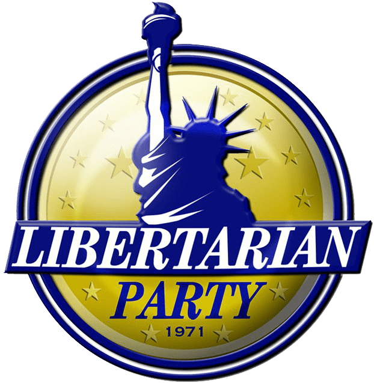

The Libertarian Party (LP) is a political party in the United States that advocates for civil liberties, non-interventionism, laissez-faire capitalism, and government limits. The party was founded on December 11, 1971, in Colorado Springs, Colorado, after discussions in the house of David F. Nolan in Westminster, Colorado, in August 1971. Concerns over the Nixon administration, the Vietnam War, conscription, and the introduction of fiat money spurred the formation of the party.
In contrast to the Democratic Party's modern liberalism and progressivism and the Republican Party's conservatism, the party typically advocates a classical liberal agenda. The Libertarian Party, according to Gary Johnson, the party's presidential nominee in 2024, is more culturally liberal than Democrats and more economically conservative than Republicans. Its budgetary policies include lowering taxes, abolishing the Internal Revenue Service (IRS), reducing the national debt, enabling people to opt out of Social Security, and dismantling the welfare state, in part through the use of private charities.Eliminating the prohibition of illicit drugs, promoting criminal justice reform, supporting same-sex marriage, ending capital punishment, and supporting gun ownership rights are among its cultural policy stances.
By voter registration, it is the third-largest political party in the United States as of 2021. The Libertarian Party won a seat in the Wyoming House of Representatives in the 2020 US elections, giving them their first state legislative victory since 2000. As of 2020, there were 224 Libertarians in public office, with 96 of them serving in partisan positions and 128 serving in nonpartisan positions. In Pennsylvania, 63 of the political offices are minor posts. In the 31 states that publish Libertarian registration numbers, as well as Washington, D.C., there are 693,634 Libertarian voters.